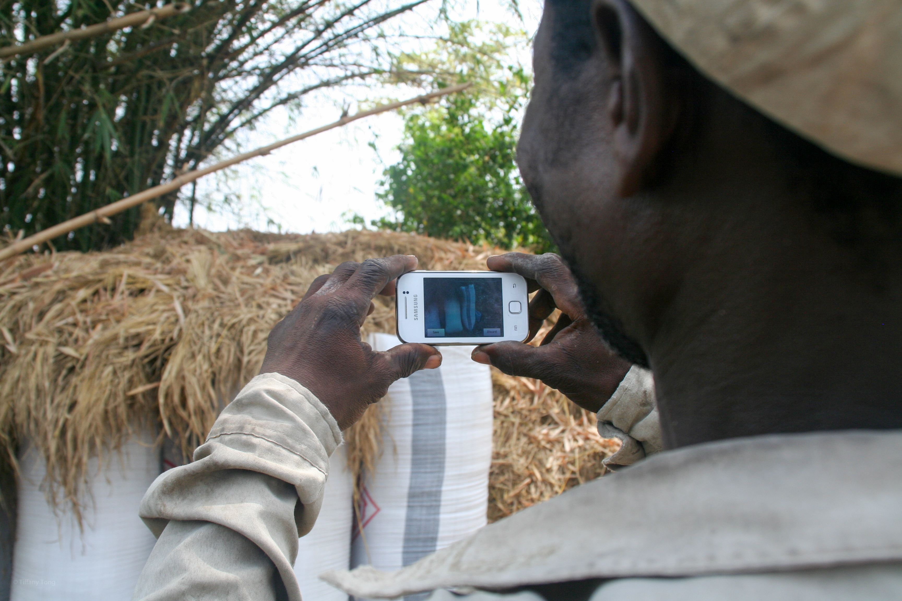

In September 2012, I moved to the UAE to join The Center for Technology and Economic Development, a research center based at New York University's campus in Abu Dhabi. This has been an exciting opportunity to work with team members in the US, Middle East, and Africa, and come together to collectively study economic markets and the role of technology in addressing common challenges in developing regions.

My role at CTED has combined elements of both researcher and project manager. The majority of my projects have centered around the development of Android apps to crowdsource high quality data from rural areas in Ghana, ranging from food production to transportation costs. We work mostly with rural farmers and agricultural extension officers and few of our users had ever even operated smartphones before our projects.
In these environments, it was therefore essential that we develop straightforward applications that took challenges such as semi-literacy, unreliable mobile network infrastructure, and long periods between potential battery charges into account. In many cases, this meant sacrificing trendy features or "stylish" UI designs for practicality. Fonts and buttons had to be enlarged, color schemes had to be visible in bright sunlight, and interactions had to be deliberate to minimize user errors, meaning that even basic swiping gestures had to be avoided. Moreover, data transfer had to be efficient, storage solutions had to accommodate multiple source channels, and visualizations had to suit different users ranging from community members to academic researchers.

Following an iterative design process that allowed us to quickly pivot based on our evolving needs, I traveled to Ghana numerous times over a two-year period to conduct background research and field test our apps with several communities. I then worked with our software developers - based in both Abu Dhabi and Accra - to apply lessons from the field and coordinate the development of end-to-end systems that integrate our apps with appropriate data storage and visualization tools.

Through the years, I have also led an in-depth research project investigating the accuracy of GPS in smartphones compared with professional surveying equipment, written Espresso tests to automate UI testing of our apps, and introduced a Node JS web tool for improved data verification. I've designed UI layouts, flown drones, and danced azonto in the streets of Accra. In short, I've had the time of my life!